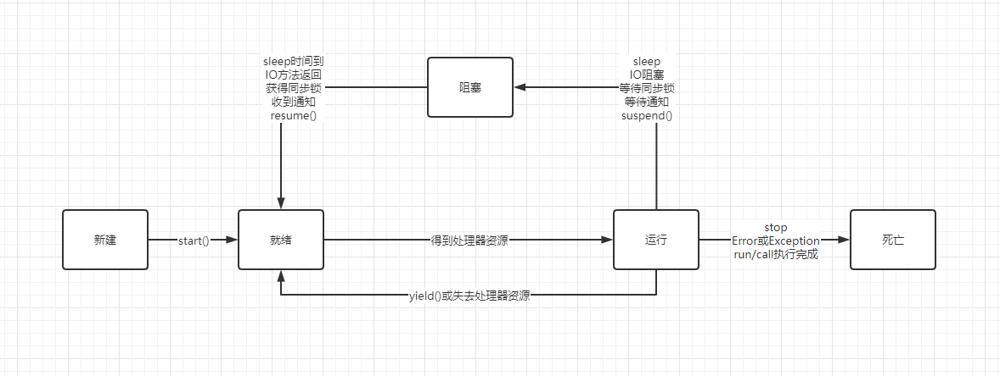

前言
本篇博客叙述Java多线程的基本知识和基本操作。
待补充的部分：
- [ ] 线程调度
- [ ] AtomicInteger
- [ ] Semaphore
- [ ] 阻塞队列的实现类详解
- [ ] 多线程共享数据的方法
- [ ] ConcurrentHashMap
- [ ] Java并发关键字
- [ ] 进程调度算法
- [ ] CAS/ABA/AQS
线程概述
进程
当一个程序进入内存运行时，即变成一个进程。进程是处于运行过程中的程序，并且具有一定独立的功能，进程是系统进行资源分配和调度的一个独立单位。
一般而言，进程包含三个特征：独立性；动态性；并发性。、
并发和并行是两个概念，并行是指同一时刻，有多条指令在多个处理器上同时执行；并发指在同一时刻只能有一条指令执行，但多个进程指令被快速轮换执行，使得宏观上具有多个进程同时执行的效果。
线程
多线程扩展了多进程的概念，使得同一个进程可以同时并发处理多个任务。
线程是进程的执行单元，是进程的组成部分，一个进程可以拥有多个线程，一个线程必须有一个父进程。线程可以拥有自己的堆栈、自己的程序计数器和自己的局部变量。
多个线程共享父进程里的全部资源，可以与其他线程共享父进程中的共享变量和部分环境。
线程是独立于运行的，他并不知道进程中是否还有其他线程存在。现成的执行是抢占式的，也就是说，当前运行的线程在任何时候都可能被挂起，以便另一个线程可以运行。
一个线程可以创建和撤销另一个线程，同一个进程中的多个线程之间可以并发执行。
从逻辑的角度，多线程存在于一个应用程序中，让一个应用程序中可以有多个执行部分同时执行，但操作系统无须将多个线程看作多个独立的应用，对多线程实现调度和管理以及资源分配。线程的调度和管理由进程本身负责完成。
线程优势
进程中线程的之间的隔离程度更小。
多个线程共享同一个进程虚拟空间。线程共享的环境包括：进程代码段、进程的共有数据等。
总结起来，使用多线程编程具有如下优点：
- 进程之间不能共享内存，但线程之间共享内存很容易
- 系统创建进程时，需要位该进程重新分配系统资源，但创建线程则代价小很多，因此使用多线程实现多任务并发比多进程的效率高。
- Java语言内置了多线程功能支持，而不是单纯的作为底层操作系统的调度方式，从而简化了Java的多线程编程。
线程创建和启动
有三种方式创建线程类
继承Thread类创建线程类
- 定义Thread的子类，并重写run方法，该run方法的方法题就代表了线程需要完成的任务。（线程执行体）
- 创建Thread子类的实例，即创建了线程对象。
- 调用线程对象的start方法来启动该线程。
实现Runnable接口创建线程类
- 定义Runnable接口的实现类，并重写该接口的run方法。该run方法的方法体同样是该线程的线程执行体。
- 创建Runnable实现类的实例，并以此实例作为Thread的target来创建Thread对象，该Thread对象才是真正的线程对象。
代码
public class ThreadTester { |
注
- 使用继承Thread类的方法来创建线程类时，多个线程之间无法共享线程类的实例变量。
- Runnable对象仅作为Thread对象的target，Runnable实现类里包含的run方法仅作为线程执行体。而实际的线程对象依然是Thread实例，只是该Thread线程负责执行其target的run方法。
- 通过实现Runnable接口来获得当前线程对象，则必须使用Thread.currentThread()方法。
- 从Java8开始，Runnable接口使用了@FunctionalInterface，也就是说，可以使用Lambda表达式创建Runnable对象。下面介绍的Callable接口也是函数式接口。
使用Callable和Future创建线程
Callable接口提供了一个call方法可以作为线程执行体，但call方法比run方法功能更强大。
- call方法有返回值。
- call可以声明抛出异常。
完全可以提供一个Callable对象作为Thread的target，而该线程的线程执行体就是该Callable对象的call方法。但Callable接口不是Runnable接口的子接口，所以Callable对象不能直接作为Thread的target。
Java5提供了Future接口来代表Callable接口里call方法的返回值，并为Future接口提供了一个FutureTask实现类，该实现类实现了Future接口并实现了Runnable接口，可以作为Thread类的target。
Future接口中定义了如下公共方法来控制它关联的Callable任务。
boolean cancel(boolean mayInterroutIfRunning)：试图取消该Future里关联的Callable任务。V get()：返回Callable任务里的call方法的返回值。调用该方法将导致程序阻塞，必须等待子线程接口后才会得到返回值。V get(long timeout, TimeUnit unit)：返回Callable任务里的call方法的返回值。该方法让程序最多阻塞timeout和unit指定的时间，如果经过指定时间后Callable任务依然没有返回值，将会抛出TimeoutException异常。boolean isCancelled()如果Callable任务正常完成前被取消，则返回true。boolean isDone()如果Callable任务已完成，则返回true。
创建并启动有返回值的线程步骤如下：
- 创建Callable接口的实现类，并实现call方法（注意泛型），该call方法将作为线程执行体，且该call方法有返回值，再创建Callable实现类的实例。
- 使用FutureTask类来包装Callable对象，该FutureTask对象封装了该Callable对象的call方法的返回值。
- 使用FutureTask对象作为Thread对象的target创建并启动新线程。
- 调用FutureTask对象的get方法来获得子线程执行结束后的返回值。
代码：
public class CallableTester { |
注：Callable接口有泛型限制，Callable接口里的泛型形参类型与call方法返回值类型相同。
三种创建线程的方式对比
- 实现Runnable接口和实现Callable接口的方式基本相同，只是Callable接口里定义的方法有返回值，可以声明抛出异常而已。
- 采用实现Runnable、Callable接口的方式的优点是
- 线程类还可以继承其他类
- 多个线程可以共享一个target对象，非常适合多个相同线程来处理同一份资源的情况。
- 采用继承Thread类方式创建多线程的优点是：
- 编写简单
线程的生命周期
一个线程要经过新建（New）、就绪（Ready）、运行（Running）、阻塞（Blocked）、死亡（Dead）5种状态。
线程状态以及转换图如下：

新建和就绪状态
当程序使用了new关键字创建了一个线程之后，该线程就处于新建状态。
当线程调用了start方法后，该线程就处于就绪状态。处于就绪状态的线程并没有开始运行，只是表示该线程可以运行了。
运行和阻塞状态
如果处于就绪状态的线程获得了CPU，开始执行run方法的线程执行体，则该线程就处于运行状态。
线程在运行过程种需要被中断，目的是使其他线程获得执行的机会。当前执行的线程被阻塞后，其他线程就可以获得执行的机会。被阻塞的线程会在合适的时候将重新进入就绪状态。
比较特殊的情况，调用yield方法可以让运行状态的线程转入就绪状态。、
线程死亡
线程可以以如上图三种方式死亡。
为了测试某个线程是否死亡，可以调用线程对象的isAlive方法，当线程处于就绪、运行、阻塞三种状态时，该方法将返回true；当线程处于新建、死亡两种状态时，该方法将返回false。
注意：
- 当主线程结束时，其他线程不受影响，并不会随之结束。一旦子线程启动起来后，他就拥有和主线程相同的地位，他不会受主线程的影响。
- 不要试图对一个已经死亡的线程调用start方法使他重新启动。
- 对于新建状态的线程两次调用start方法也是错误的。
控制线程
join线程
Thread提供了一个让线程等待另一个线程完成的方法——join方法。当在某个车光绪执行流中调用其他线程的join方法时，调用线程将被阻塞，直到被join方法加入的join线程执行完为止。
join方法通常由使用线程的程序调用。
public class JoinTester { |
由于在主线程调用了子线程的join方法，则主线程必须等到子线程（被Join的线程）执行完毕才能继续执行。
后台线程
有一种线程，他是在后台运行的，他的任务是为其他线程提供服务，这种线程被称为“后台线程（Daemon Thread）”，又称为守护线程或精灵线程。
后台线程有个特征：如果前台线程都死亡，后台线程会自动死亡。
调用Thread的setDaemon(true)方法可将指定线程设置为后台线程。
Thread类还提供一个isDaemon方法，用于判断指定线程是否为后台线程。
前台线程创建的子线程默认就是前台线程，后台线程创建的子程序默认是后台线程。
注意：要将某个线程设置为后台线程，必须在该线程启动之前设置，也就是说setDaemon(true)比如在start方法之前调用。否则会引发异常。
线程睡眠sleep
Thread.sleep(long milis)
Thread提供了一个与sleep方法有点相似的yield方法，后者也可以让当前正在执行的线程暂停，但他不会阻塞该线程，他只是将该线程转入就绪状态。yield只是让当前线程暂停一下。让系统的线程调度器重新调度一次。
关于sleep方法和yield方法的区别如下：
- sleep方法暂停当前线程后，会给其他线程执行机会，不会理会其他线程的优先级；但yield方法只会给同优先级相同，或优先级更高的线程执行机会。
- sleep方法会将线程转入阻塞状态，直到经过阻塞时间才会转入就绪状态；而yield不会讲线程转入阻塞状态，他只是强制当前线程进入就绪状态。因此完全有可能某个线程被yield方法暂停之后，立即再次获得处理器资源被执行。
- sleep方法声明抛出了异常，所以调用sleep方法必须捕捉或者显式声明抛出该异常；而yield没有声明抛出任何异常。
- sleep方法比yield方法具有更好的移植性，更推荐用于控制并发线程的执行。
线程优先级
每个线程执行都具有一定的优先级，优先级高的线程获得较多的执行机会，而优先级低的线程则获得较少的执行机会。
每个线程默认的优先级都与创建它的父线程的优先级相同，在默认情况下，main线程具有普通优先级，由main线程创建的子线程也具有普通优先级。
Thread类提供了setPriority(int newPriority)、getPriority方法来指定或返回指定线程的优先级。其中setPriority的参数可以是一个整数，范围是1~10之间，也可以使用Thread类的如下三个静态常量。
- MAX_PRIORITY：其值为10
- MIN_PRIORITY：其值为1
- NORM_PRIORITY：其值为5
这些优先级需要操作系统的支持，因此应该尽量避免直接为线程指定优先级，而应该使用上述三个静态常量。
线程调度
抢占式调度
协同式调度
Java的线程调度方式：抢占式
线程同步
线程安全的经典问题：银行取钱问题。下面使用两个线程模拟两个人从一个银行账户中取钱。接下来定义一个账户类
public class Account { |
然后是取钱线程类。
public class DrawThread extends Thread { |
最后是主程序
public class DrawTest { |
运行结果可能为如下：
这就涉及了线程同步问题。
同步代码块
之所以出现上述结果，是因为run方法的方法体不具有线程安全性，程序有两个并发线程在修改Account对象。
为了解决这样的问题，Java的多线程支持引入了同步监视器来解决这个问题，使用让同步监视器的通用方法就是同步代码块，语法格式如下：
synchronized(obj) { |
注：
- 上述obj就是同步监视器，上面代码的含义是线程开始执行同步代码块之前必须先获得对同步监视器的锁定。
- 任何时刻只能有一个线程可以获得对同步监视器的锁定，当同步代码块执行完成后，该线程会释放对同步监视器的锁定。
- 通常推荐使用可能被并发访问的共享资源充当同步监视器。
synchronized属于独占式的悲观锁，同时属于可重入锁。
Synchronized的实现原理：详见《Offer来了 原理篇》P87
根据上述修改代码考虑使用Account作为同步监视器
public class DrawThread extends Thread { |
通过这种方式就可以保证并发线程在任一时刻只有一个线程可以进入修改共享资源的代码区（也被称为临界区），所以同一时刻只有一个线程处于临界区内，从而保证了线程安全性。
同步方法
同步方法就是使用synchronized关键字来修饰某个方法，则该方法称为同步方法，对于synchronized修饰的实例方法（而非静态方法），无需显式指定同步监视器，同步方法的同步监视器是this，也就是调用该方法的对象。
下面将Account的balance的访问设置成线程安全的，那么只要把修改balance的方法编程同步方法即可。
public class Account { |
因为Account提供了draw方法，而且取消了setBalance方法，DrawThread的run方法需要改写。
|
注：
- synchronized关键字可以修饰方法，代码块但是布恩那个修饰构造器、成员变量等。
- 经过上述修改，DrawThread类无需自己实现取钱操作，而是直接调用account的draw方法。由于draw方法使用了synchronized修饰，同步方法的监视器是this。在上面的示例种，this是account，因此多个线程并发访问同一份account之前必须先对account加锁。这就保证了线程安全。
- 在Account里定义draw方法，而不是直接在run方法种实现取钱逻辑，这种做法更符合面向对象的规则。在面向对象里有一种流行的设计：Domain Driven Design（领域驱动设计，DDD），这种方式认为每个类都应该是完备的领域对象，例如账户类应该提供账户的相关方法。
- 为了减少线程安全带来的降低程序运行效率的影响应该：不要对线程安全类的所有方法进行同步，只对那些改变京城资源的方法进行同；如果可变类有两种运行环境：单线程运行环境和多线程运行环境，则应该为可变类提供两种版本。
释放同步监视器的锁定
程序无法显式释放对同步监视器的锁定，线程会在如下几种情况下释放对同步监视器的锁定。
- 当前线程的同步方法、同步代码块执行结束。
- 当前线程在同步代码块，同步方法中遇到了break、return终止了该代码块、该方法的继续执行。
- 当前线程在同步代码块，同步方法中遇到了未处理的Error或Exception
- 程序执行了同步监视器对象的wait方法，则当前线程暂停，并释放同步监视器。
在如下情况下，线程不会释放同步监视器。
- 程序调用了Thread.sleep、Thread.yield方法来暂停当前线程的执行，
- 其他线程调用了该线程的suspend方法将线程挂起。
同步锁
Lock提供了比synchronized方法和synchronized代码块更广泛更灵活的操作。
Lock是控制多个线程对共享资源进行访问的工具，通常，锁提供了对共享资源的独占访问，每次只能有一个线程对Lock对象加锁，线程开始访问共享资源之前应先获得Lock对象。
Lock接口的主要方法：
void lock();加锁void lockInterruptibly()当前线程未被中断则获取该锁。boolean tryLock();试图加锁，但不会阻塞boolean tryLock(long time, TimeUnit unit)创建定时锁void unlock();释放锁Condition newCondition();创建条件对象，获取等待通知组件。
Lock、ReadWriteLock是J5提供的两个根接口，并为Lock提供了ReentrantLock（可重入锁）【常用】实现类，为ReadWriteLock提供了ReentrantReadWriteLock实现类。
J8新增了StampedLock类，在大多数场景下可以替代传统的ReentrantReadWriteLock。ReentrantReadWriteLock为读写操作提供了三种锁模式：Writing、ReadingOptimistic、Reading
通常使用ReentrantLock的代码格式如下：
class X{ |
ReentrantLock是一个可重入的独占锁。通过AQS来实现锁的获取和释放。
ReentrantLock不但提供了Synchronized对锁的操作功能。还提供了诸如可响应中断锁、可轮询锁请求，定时锁等避免多线程死锁的方法。
根据Lock的使用修改Account的代码如下：
public class Account { |
使用Lock与使用同步方法有点相似，只是使用Lock时显式使用Lock对象作为同步锁，而使用同步方法时系统隐式使用当前对象作为同步监视器。
同步方法或同步代码块使用竞争资源相关的、隐式的同步监视器，并且强制要求加锁和释放锁要出现在一个块结构中。并且获取了多个锁时，他们必须以相反的顺序释放。所以同步方法或同步代码块的范围机制使得多线程安全编程非常方便，可以避免很多锁的常见编程错误。
Lock提供了同步方法或同步代码块所没有的其他功能，包括tryLock方法，以及试图获取可中断锁的lockInterruptibly方法，还可以获取超时失效锁的tryLock(long, TimeUnit)方法
ReentrantLock锁具有可重入性，也就是说，一个线程可以对已加锁的ReentrantLock锁再次加锁，ReentrantLock对象会维持一个计数器来追踪lock方法的嵌套调用，线程在每次调用lock加锁后，必须显式调用unlock来释放锁，所以一段被所保护的代码可以调用另一个被相同锁保护的方法。
死锁
编写程序时应尽量避免死锁。
- 避免多次锁定：尽量避免同一个线程对多个同步监视器进行锁定
- 具有相同的加锁顺序：如果多个线程需要对多个同步监视器进行锁定，则应该保证他们以相同的顺序请求加锁。
- 使用定时锁：设置锁的超时时间。
- 依靠算法进行死锁检测。
Java锁详解
Java中的锁主要保障多并发线程情况下的数据一致性。
锁从乐观和悲观的角度可分为乐观锁和悲观锁，从获取资源的公平性角度可分为公平锁和非公平锁，从是否共享资源的角度可分为共享锁和独占锁，从锁的状态可分为偏向锁，轻量级锁和重量级锁。此外JVM还设计了自旋锁来更快的使用CPU。
乐观锁
乐观锁，在每次读取数据时都认为别人不会修改数据，所以不会上锁，但在更新时会判断在此期间别人有没有更新该数据，通常在写时先读出当前版本号然后加锁的方法。具体过程是，比较当前版本号和上一版本号，如果版本号一致，则更新，否则重复进行读、比较、写操作。
Java中的乐观锁大部分是通过CAS算法实现的。
悲观锁
悲观锁，在每次读取数据时都认为别人会修改数据，所以每次在读写数据都会上锁，这样别人像读写这个数据就会阻塞、等待直到拿到锁。
Java中的悲观锁大部分是通过AQS架构实现的。许多同步类的实现都依赖于它，例如Synchronized、ReentrantLock、Semaphore、CountDownLatch。该框架下的锁先尝试以乐观锁去获取锁，如果获取不到，则会转为悲观锁。
自旋锁
自旋锁认为，如果持有锁的线程能够在很短时间内释放锁，那么等待竞争的锁线程不需要阻塞、挂起状态切换，只需要等一等（内旋），在持有锁的线程释放锁之后即可立即获得锁，这样减少了时间损耗。
线程自选时会占用CPU，所以需要设置一个自选等待的最大时间。
自旋锁的优缺点：
- 优点：减少了CPU上下文的切换，对于占用锁的时间非常短或锁竞争不激烈的代码块来说，性能大幅提升。
- 缺点：线程如果在自旋过程中长时间获取不到锁资源，将会引起CPU的浪费。
可重入锁
可重入锁是指该锁支持一个线程对同一个资源多次加锁。Synchronized、ReentrantLock都是可重入锁。
共享锁
允许多个线程同时获取该锁，并发访问共享资源。ReentrantReadWriteLock中的读锁为共享锁的实现。
共享锁采用了乐观的加锁策略，允许多个执行读操作的线程同时访问共享资源。
独占锁
也叫互斥锁。每次只允许一个线程持有该锁。ReentrantLock为独占锁的实现。
独占锁是一种悲观的加锁策略。同一时刻只允许一个读线程读取锁资源，限制了读操作的并发性。
重量级锁、轻量级锁和偏向锁
以后再说。
公平锁和非公平锁
- 公平锁指再分配锁之前检查是否有线程在排队等待获取锁，优先将锁分配给排队时间最长的线程。
- 非公平锁指在分配锁时不考虑线程排队的情况，直接尝试获取锁，在获取不到锁时在排到队尾等待。
公平锁需要在多核的情况下维护一个锁线程等待队列，基于该队列进行锁的分配，因此效率比非公平锁低很多。
Java中的Synchronized、ReentrantLock默认lock方法都是非公平锁。
读写锁：ReadWriteLock
Lock接口及对象加的锁是普通锁，这种锁不区分读写。为了提高性能，Java提供了读写锁。
读写锁分为读锁和写锁。多个读锁不互斥，读锁和写锁互斥。在没有写锁的情况下，读是无阻塞的。
一般做法是分别定义一个读锁和写锁。在Java中使用ReentrantReadWriteLock来完成对读写锁的定义和使用。
分段锁
分段锁是一种思想。用于将数据分段并在每个分段上都单独加锁，把锁进一步细粒度化，以提高并发效率。例如：ConcurrentHashMap
锁优化
- 减少锁的持有时间
- 减少锁粒度
- 锁分离
- 锁粗化
- 锁消除
synchronized
不再赘述。
Lock
不再赘述。
Semaphore
以后再说
AtomicInteger
以后再说
线程通信
通过一个案例，来学习线程通信部分的知识。
假设系统有一个特殊的需求：系统要求存款者和取款者不断重复地存款取款，而且要求每当存款者将钱存入账户，取款者就立刻去除这笔钱，不允许连续两次存钱，也不允许连续两次取钱。
传统的线程通信
为了实现上述功能，可以借助Object类提供的wait、notify、notifyAll方法。这三个方法不属于Thread，但是这三个方法必须由同步监视器对象来调用。
- 对于synchronized修饰的同步方法，this就是同步监视器对象，所以可以直接在同步方法中直接调用这三个方法。
- 对于synchronized修饰的同步代码块，同步监视器是synchronized后括号里的对象，必须使用该对象调用这三个方法。
下面介绍这三个方法：
- wait：导致当前线程等待，直到其他线程调用该同步监视器的notify或notifyAll来唤醒该线程。无参数的wait方法会一直等待，带时间参数的wait方法线程会在指定时间后自动苏醒。
- notify：唤醒在此同步监视器上等待的单个线程。唤醒是任意的。只有当前线程放弃对该同步监视器的锁定后，才可以执行被唤醒的线程。
- notifyAll：唤醒在此同步监视器上等待的所有线程。
本程序为Account类提供了draw方法和deposit方法，分别对应账户的取钱和存钱操作。
public class Account { |
接下来是取款者和存款者线程
//取款线程 |
//存款线程 |
最后是主程序：
public static void main(String[] args) { |
主程序设置了一个取款者和两个存款者，最后线程会阻塞这是因为两个存款者会有200次存款操作，而一个取款者只有100次取款操作。运行程序可以发现，存取款线程交替执行。
使用Condition控制线程通信
如果程序不使用synchronized关键字来保证同步，而是使用Lock对象来保证同步，则系统中不存在隐式的同步监视器，也就不能使用wait、notify、notifyAll方法进行通信了。
当使用Lock对象来保证同步时，Java提供了一个Condition类来保持协调，使用Condition可以让那些已经得到Lock对象却无法继续执行的线程释放Lock对象，Condition对象也可以唤醒其他处于等待的线程。
Condition实例被绑定在一个Lock对象上。要获得Lock实例的Condition实例，需要调用Lock都西昂的newCondition方法。Condition提供了如下三个方法
- await：类似于wait方法，导致线程等待，直到其他线程调用该Condition的signal、signalAll方法来唤醒该线程。
- signal：唤醒此Lock对象上等待的单个线程。只有当前线程放弃对该Lock对象的锁定后，才可以执行被唤醒的进程。
- signalAll：唤醒此Lock对象上等待的所有线程。
根据上面改写Account类：
public class Account { |
使用阻塞队列控制线程通信
Java5提供了一个BlockingQueue接口，它主要用作线程同步工具，而非容器。
BlockingQueue有一个特征：当生产者线程试图向BlockingQueue中放入元素时，如果该队列已满，则该线程被阻塞。当消费者线程试图从BlockingQueue取出元素时，如果该队列已空，则该线程被阻塞。
程序的两个线程通过交替向BlockingQueue放入取出元素，即可很好的控制线程的通信。
BlockingQueue包含的方法对应关系如图：
| 抛出异常 | 返回boolean | 阻塞线程 | 指定超时市场 | |
|---|---|---|---|---|
| 队尾插入元素 | add(e) | offer(e) | put(e) | offer(e, time, unit) |
| 队头删除元素 | remove() | poll() | take() | poll(time, unit) |
| 获取、不删除元素 | element() | peek() | 无 | 无 |
BlockingQueue与实现类之间类图如下：
可以看到BlockingQueue的五个实现类
下面使用BlockingQueue来实现生产者消费者的线程通信。
public class BlockingQueueTest { |
该程序不符合预期，原因不明。
多线程共享数据
将数据抽象成一个类，并将这个数据的操作封装到这个类中
将Runnable对象作为一个类的内部类，将共享数据作为这个类的成员变量
线程组和未处理的异常
线程组
Java使用ThreadGroup来表示线程组，Java允许程序对线程组进行控制。用户创建的所有线程都属于指定线程组。如果程序没有显式指定线程属于哪个线程组，则该线程属于默认线程组。默认情况下， 子线程和创建它的父线程处于同一个线程组。
线程运行中途不能改变它所属的线程组。
下面是Thread类提供的构造器来设置线程属于哪个线程组：
- Thread(ThreadGroup group, Runnable target)：以target的run方法作为线程执行体创建新线程，属于group线程组。
- Thread(ThreadGroup group, Runnable target, String name)
- Thread(ThreadGroup group, String name)
Thread提供了一个getThreadGroup方法来返回线程所属的线程组。
ThreadGroup提供了两个构造器来创建实例。
- ThreadGroup(String name)
- ThreadGroup(ThreadGroup parent, String name)：以指定名字、指定父线程组创建一个新线程组。
其中name参数是指定线程组的名字，线程组的名字可以通过getName方法得到，但是不能修改。
ThreadGroup的常用方法：
- int activeCount()
- void isDaemon()
- void interrupt()
- void setDaemon(boolean daemon)
- void setMaxPriority(int pri)
ThreadGroup内定义了一个很有用的方法：void uncaughtException(Thread t, Throwable e)，该方法可以处理该线程组内的任意线程所抛出的未处理异常。
线程异常
Java5之后，如果线程执行过程中抛出了一个未处理的异常，JVM在结束之前会自动查找是否有对应的Thread.UncaughtExceptionHandler对象，如果有，则会调用该对象的uncaughtException(Thread t, Throwable e)来处理异常。
Thread类提供了两个方法来设置异常处理器：
- setUncaughtExceptionHandler(Thread.UncaughtExceptionHandler eh)：为指定线程实例设置默认的异常处理器
- static setDefaultUncaughtExceptionHandler(Thread.UncaughtExceptionHandler eh)：为该线程类的所有实例设置默认的异常处理器。
ThreadGroup类实现了Thread.UncaughtExceptionHandler接口。
所以线程处理异常的流程如下：
- 如果线程设置了异常处理器，则调用该异常处理器处理异常
- 查找线程是否属于线程组：
- 如果所属线程组有父线程组，则调用父线程组的uncaughtException方法
- 如果该线程组有异常处理器，则使用该异常处理器处理异常。
注意：当使用catch捕获异常时，异常不会向上传播给上一级调用者；但使用异常处理器对异常进行处理后，异常依然会传播给上一级调用者。
线程池
当程序需要创建大量生存期很短暂的线程时，更应该考虑使用线程池。
线程池在系统启动时即创建大量空闲线程，程序将一个Runnable/Callable对象传给线程池，线程池就会启动一个空闲线程来执行run/call方法，方法执行完毕后，线程不会死亡而是返回线程池成为空闲状态。
线程池的主要作用是线程复用，线程资源管理，控制操作系统的最大并发数，以保证系统高效（通过线程资源复用实现）且安全（通过控制最大线程并发数实现）的运行。
线程池的核心组件和核心类
Java线程池主要由4个核心组件组成。
- 线程池管理器：用于创建并管理线程
- 工作线程：线程池中执行具体任务的线程。
- 任务接口：用于定义工作线程的调度和执行策略，只有线程实现了该接口，线程中的任务才能够被线程池调度。
- 任务队列：存放待处理的任务，新的任务将会不断被加入队列中，执行完成的任务将被从队列中移除。
Java线程池用到了Executor、Executors、ExecutorService、ThreadPoolExecutor、Callable、Future、FutureTask这几个核心类，具体继承关系如下：
ThreadPoolExecutor是构建线程池的核心实现。
使用Executors管理线程
Java5以前，开发者必须实现自己的线程池，从Java5开始，新增了一个Executors工厂类来产生线程池。它包含如下静态工厂方法：
- ExecutorService newCachedThreadPool()：创建一个具有缓存功能的线程池
- ExecutorService newFixedThreadPool(int nThreads)：创建一个可重用的、具有固定线程数的线程池
- ExecutorService newSingleThreadExecutor()：创建一个只有单线程的线程池，相当于newFixedThreadPool(1)
- ScheduledExecutorService newScheduledThreadPool(int corePoolSize)：创建具有指定线程数的线程池。参数指出池中所保存的线程数。
- ScheduledExecutorService newSingleThreadScheduledExecutor()：创建只有一个现成的线程池
- ExecutorService newWorkStealingPool(int parallelism)：创建持有足够的线程的线程池来支持给定的并行级别
- ExecutorService newWorkStealingPool()：相当于前一个方法的简化版本，假设当前机器有4个CPU，则相当于前一个方法传入4
前面介绍的方法中返回值类型中ExecutorService代表线程池，它可以执行Runnable/Callable所代表的线程；ScheduledExecutorService 是ExecutorService的子类，它可以在指定延迟后执行线程任务。
最后两个方法是J8新增，他们成分利用了多CPU的并行能力，这两个方法创建的相当于后台线程池。
ExecutorService代表尽快执行线程的线程池：
Future<?> submit(Runnable task)：将一个Runnable对象提交给线程池，线程池将在有空闲线程时执行Runnable对象代表的任务。其中Future对象代表Runnable的返回值，但是run方法没有返回值，所以Future对象将在run方法执行结束后返回null<T> Future<T> submit(Runnable task, T result)：同上一个方法类似，但本方法将在run方法结束后返回result<T> Future<T> submit(Callable<T> task)
ScheduledExecutorService 代表在指定延迟后或周期性的执行线程任务，它提供了四个主要方法：
<V> ScheduledFuture<V> schedule(Callable<V> callable, long delay, TimeUnit unit)：ScheduledFuture<?> schedule(Runnable command, long delay, TimeUnit unit)ScheduledFuture<?> scheduleAtFixedRate(Runnable command, long initialDelay, long period, TimeUnit unit)：可设定频率重复执行线程任务ScheduledFuture<?> scheduleWithFixedDelay(Runnable command, long initialDelay, long delay, TimeUnit unit)：每一次执行终止和下一次执行开始之间都存在一个给定的延迟。
当用完一个线程池后，应该调用该线程池的shutdown方法，调用shutdown方法后，线程池不再接受新的任务，但会将以前所有已提交任务执行完成。
使用线程池执行线程任务的步骤如下：
- 调用Executors类的静态工厂方法创建一个线程池
- 创建Runnable/Callable实例
- 调用submit方法提交Runnable/Callable实例
- 调用线程池的shutdown方法关闭线程池。
举例：
public class ThreadPoolTest { |
使用ForkJoinPool利用多CPU
Java7提供了ForkJoinPool来支持多CPU计算。ForkJoinPool是ExecutorService的实现类，因此是一个特殊的线程池。
ForkJoinPool有两个构造器：
- ForkJoinPool(int parallelism)：创建一个包含parallelism个并行线程的ForkJoinPool
- ForkJoinPool()：以Runtime.availableProcessors方法的返回值作为parallelism参数创建ForkJoinPool
J8进一步扩展了ForkJoinPool的功能。J8通过提供如下两个静态方法为ForkJoinPool增加了通用池功能。
- ForkJoinPool commonPool()：该方法返回一个通用池，通用池不会受到shutdown或shutdownNow方法的影响。
- int getCommonPoolParallelism：该方法返回通用池的并行级别。
在创建ForkJoinPool实例之后就可以调用它的submit(ForkJoinTask
举例：
public class ForkJoinPoolTest { |
*ThreadPoolExecutor
Java提供了Excutors工具类，适用于小项目，对于一些大型程序还是需要自己创建ThreadPoolExecutor类。这样做的好处有：
- 使用ThreadPoolExecutor更加明确线程池的运行规则，规避资源耗尽的风险。
- Excutors的newFixedThreadPool和newSingleThreadExecutor的主要问题是堆积的请求处理队列可能会耗费非常大的内存，甚至OOM；Excutors的newCachedThreadPool和newScheduledThreadPool主要问题是线程最大数为Integer.MAX_VALUE，可能会创建数量非常多的线程，甚至OOM。
ThreadPoolExecutor是构建线程池的核心实现，定义如下
public ThreadPoolExecutor(int corePoolSize, |
具体参数如表格：
| 参数 | 说明 |
|---|---|
| corePoolSize | 线程池中核心线程的数量 |
| maximumPoolSize | 线程池中最大线程数量 |
| keepAliveTime | 当前线程数量超过corePoolSize时，空闲线程的存活时间 |
| unit | keepAliveTime的时间单位 |
| workQueue | 任务队列，被提交但尚未被执行的任务存放的地方 |
| threadFactory | 线程工厂，用于创建线程，可使用默认的线程工厂或自定义 |
| handler | 由于任务过多或其他原因导致线程池无法处理时的任务拒绝策略 |
工作流程
通过调用ThreadPoolExecutor的构造方法来创建一个线程池。线程池刚被创建时，只是向系统申请一个用于执行线程队列和管理线程池的线程资源。在添加一个任务时，当前现有线程数（设为n）：
- n<corePoolSize，线程池就会立刻创建线程并执行该线程任务。
- n>=corePoolSize，该任务就会进入阻塞队列。
- 如果队列已满，且n<maximumPoolSize时，线程池会创建非核心线程立刻执行该线程任务。
- 如果队列已满，且n>=maximumPoolSize时，线程池将拒绝执行该线程任务并抛出RejectExecutionException异常。
- 线程任务执行完毕，该任务将从线程池队列中移除，线程池将从队列中取出下一个线程任务继续执行。
- 在线程处于空闲状态的实践超过keepAliveTime时，正在运行的线程数量超过corePoolSize，该线程将被认定为空闲线程并停止。因此，在线程池中所有线程任务都执行完毕，线程池会收缩到corePoolSize大小。
入队策略
- 直接传递：SynchronousQueue（待补充）
- 无界队列：使用无界队列（LinkedBlockingQueue）作为等待队列，当所有核心线程都在处理任务时，新提交的任务都会进入等待队列。此时maximumPoolSize将失去作用。
- 有界队列：有界队列（ArrayBlockingQueue）可以防止资源耗尽，但是难以调整和控制。队列大小和线程池大小可以相互作用，使用大队列和小线程数可以减少CPU使用率、系统资源和上下文切换的开销，但是会导致吞吐量变低，如果任务频繁阻塞，系统就能为更多的线程调度执行时间。使用小队列通常需要更多的线程数，这样可以最大化CPU使用率。但可能会需要更大的调度开销，从而降低吞吐量。
拒绝策略
JDK内置的拒绝策略有AbortPolicy、CallerRunsPolicy、DiscardOldestPolicy、DiscardPolicy这四种。
- AbortPolicy：默认策略，抛出RejectExecutionException异常
- CallerRunsPolicy：在execute方法的调用线程中运行被拒绝的任务，如果线程已关闭，任务将被丢弃。
- DiscardOldestPolicy：丢弃队列中等待时间最长的任务并执行当前提交的任务。
- DiscardPolicy：直接丢弃任务。
- 自定义拒绝策略需要实现RejectedExecutionHandler接口，实现
rejectedExecution(Runnable r, ThreadPoolExecutor executor)方法。
案例
public static void main(String[] args) throws InterruptedException { |
下面是运行结果。
对该运行结果进行分析：
- 由于corePoolSize设置的为3，所以任务1、2、3正常提交且开始执行。
- 提交任务4，5时，任务123还在运行，所以任务4，5进入到阻塞队列。
- 提交任务6，7，8时，正在运行的任务等于corePoolSize且小于maximumPoolSize，阻塞队列满，所以会立即创建非核心线程执行任务678
- 当任务1执行完毕后，取出队列中的任务4开始执行。
- 当任务2执行完毕后，取出队列中的任务5开始执行。
为了演示默认的拒绝策略，将上述案例增加一个线程。结果如图
线程相关类
ThreadLocal
ThreadLocal是Therad的局部变量的维护类，在Java中是作为一个特殊的变量存储在。当使用ThreadLocal维护变量时，ThreadLocal为每个使用该变量的线程提供独立的变量副本，所以每一个线程都可以独立地改变自己的副本，而不会影响其它线程所对应的副本。
因为每个Thread内有自己的实例副本，且该副本只能由当前Thread使用，也就不存在多线程间共享的问题。
总的来说，ThreadLocal适用于每个线程需要自己独立的实例且该实例需要在多个方法中被使用，也即变量在线程间隔离而在方法或类间共享的场景。
比如，有一个变量count，在多线程并发时操作count++会出现线程安全问题。但是通过ThreadLocal就可以为每个线程创建只属于当前线程的count副本，各自操作各自的副本，不会影响到其他线程。
使用示例：
public class ThreadLocalTest { |
执行程序，打印结果如下：
main线程ThreadLocal中的值：程序新视界 |
对照程序和输出结果，你会发现，主线程和Thread-0各自独享自己的变量存储。主线程并没有因为Thread-0调用了HOLDER的set方法而被改变。
之所以能达到这个效果，正是因为在ThreadLocal中，每个线程Thread拥有一份自己的副本变量，多个线程互不干扰。
ThreadLocal和其他同步机制一样，都是为了解决多线程对同一变量的访问冲突。在普通的同步机制中，试图用过对对象枷锁来实现多个线程对同一变量的安全访问的。ThreadLocal从另一个角度来解决多线程并发访问，ThreadLocal将需要并发访问的资源复制多分，每个线程拥有一份资源，从而就没有必要再对该变量进行同步了。在编写多线程代码时，可以把不安全的整个变量封装进ThreadLocal，或者把该对象与线程相关的状态使用ThreadLocal保存。
ThreadLocal不能代替同步机制，两者面向的领域不同。同步机制是为了同步多个线程对相同资源的并发访问，是多个线程之间通信的有效方式；而ThreadLocal是为了隔离多个线程的数据共享，从根本上避免了多个线程对共享资源的竞争。
参考资料：https://zhuanlan.zhihu.com/p/368293603
包装线程不安全集合
在Java集合中所讲的ArrayList、LinkedList、HashSet、TreeSet、HashMap、TreeMap都是线程不安全的。Collections提供的类方法可以把这些集合包装成线程安全的集合。
- static
Collection synchronizedCollection(Collection c) - static
List synchronizedList(List list) - static
- static
Set synchronizedSet(Set s) - static
- static
SortedSet synchronizedSortedSet(SortedSet s)
例如需要使用线程安全的HashMap对象，则采用下面的代码：
Map<String, String> map = Collections.synchronizedMap(new HashMap<>()); //在创建后立即包装 |
线程安全集合类
线程安全的集合类可以分为两种：
- 以Concurrent开头的集合类：代表了支持并发访问的集合，对这种集合的写入操作都是线程安全的，但读取操作不必锁定。
- 以CopyOnWrite开头的集合类：采用了更复杂的算法（复制底层数组的方式实现写操作）来保证永远不会锁住集合，因此并发写入时有较好的性能。
ConcurrentHashMap
- 默认支持16个线程并发写入，可以通过设置构造参数来支持更多的并发。
- J8扩展了ConcurrentHashMap的功能，新增的方法分为如下三类
- forEach
- search
- reduce
J9新增的发布-订阅框架
略
Java并发关键字
CountDownLacth
CyclicBarrier
Semaphore
volatile
补充：进程调度算法
优先调度算法
高优先权优先调度算法
时间片的轮转调度算法
补充：CAS、ABA、AQS
参考资料
- 《疯狂Java讲义》 多线程篇
- 为什么阿里不允许用Executors创建线程池，而是通过ThreadPoolExecutor的方式？
- 《Offer 来了 Java面试核心知识点讲解 原理篇》 多线程
- ThreadLocal全攻略：使用实战，源码分析，内存泄露分析